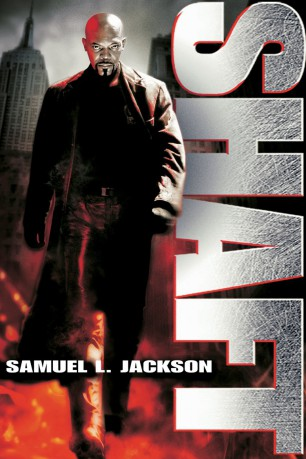

#3351 Shaft - Noch Fragen?
 
 IMDB-Wertung: 5.9 / 10
IMDB-Wertung: 5.9 / 10  Metascore: 50
Metascore: 50 
Nach dem Mord an einem Studenten wird Walter Wade, Sprössling der New Yorker Oberschicht, von Shaft gestellt. Doch für Wades Vater sind 200.000 Dollar Kaution kein Problem. Wieder in Freiheit, setzt sich Wade in die Schweiz ab - und auf die Spitze von Shafts Fahndungsliste. Heimlich kehrt Wade nach New York zurück und versucht, mit Hilfe des Drogenbosses Hernandez die einzige Zeugin des Mordes, die Kellnerin Diane, zu beseitigen. Für Shaft beginnt ein Wettlauf mit der Zeit ...
Jahr: 2000
Dauer: 99 Minuten
FSK: 16
Land: Deutschland Studio: UIPTonspuren: DD5.1 - ,
Untertitel:
Auflösung: 1080p (1920x808) Größe: 8151 MB
Genre: Action, Thriller, Krimi
Regisseur:  John Singleton
John Singleton
Drehbuch: Ernest Tidyman, John Singleton, Shane Salerno, Richard Price, John Singleton
Soundtrack: David Arnold
Darsteller:
 Samuel L. Jackson als John Shaft
Samuel L. Jackson als John Shaft Vanessa Williams als Carmen Vasquez
Vanessa Williams als Carmen Vasquez Jeffrey Wright als Peoples Hernandez
Jeffrey Wright als Peoples Hernandez Christian Bale als Walter Wade, Jr.
Christian Bale als Walter Wade, Jr.- Busta Rhymes als Rasaan
 Dan Hedaya als Jack Roselli
Dan Hedaya als Jack Roselli Toni Collette als Diane Palmieri
Toni Collette als Diane Palmieri Richard Roundtree als Uncle John Shaft
Richard Roundtree als Uncle John Shaft Ruben Santiago-Hudson als Jimmy Groves
Ruben Santiago-Hudson als Jimmy Groves Josef Sommer als Curt Fleming
Josef Sommer als Curt Fleming Lynne Thigpen als Carla Howard
Lynne Thigpen als Carla Howard Philip Bosco als Walter Wade, Sr.
Philip Bosco als Walter Wade, Sr. Pat Hingle als Hon. Dennis Bradford
Pat Hingle als Hon. Dennis Bradford Lee Tergesen als Luger
Lee Tergesen als Luger Daniel von Bargen als Lt. Kearney
Daniel von Bargen als Lt. Kearney Sonja Sohn als Alice
Sonja Sohn als Alice Peter McRobbie als Lt. Cromartie
Peter McRobbie als Lt. Cromartie Zach Grenier als Harrison Loeb
Zach Grenier als Harrison Loeb- Ron Castellano als Mike Palmieri
 Andre Royo als Tattoo
Andre Royo als Tattoo Mekhi Phifer als Trey Howard
Mekhi Phifer als Trey Howard- Gano Grills als Cornbread
- Catherine Kellner als Ivy
 Angela Pietropinto als Mrs. Ann Palmieri
Angela Pietropinto als Mrs. Ann Palmieri- Lanette Ware als Terry
- Stu 'Large' Riley als Leon
- Mark Zeisler als D.A. Andrew Nicoli
- Preston Thomas als Malik's Crew
 Elizabeth Banks als Trey's Friend
Elizabeth Banks als Trey's Friend- Evan Farmer als Walter's Friend
- Will Chase als Walter's Friend
- Jeff Branson als Walter's Friend
- Jerome Preston Bates als Desk Sergeant
 John Elsen als Uniform Cop in Metronome
John Elsen als Uniform Cop in Metronome- Lawrence Taylor als Lamont
- Caprice Benedetti als Karen
 John Cunningham als Judge
John Cunningham als Judge- Louie Leonardo als Pistolero
 F. Valentino Morales als Enforcer
F. Valentino Morales als Enforcer- Myron Primes als Young Blood
- Gordon Parks als Lenox Lounge Patron / Mr. P
- William H. Burns als Arresting Officer , uncredited
- Nicholas J. Coleman als Bystander at Metronome , uncredited
- Johanna Estevez als Girlfriend , uncredited
- Todd Fredericks als Bystander at Metronome , uncredited
 Carson Grant als Police Officer , uncredited
Carson Grant als Police Officer , uncredited Isaac Hayes als Mr. P , uncredited
Isaac Hayes als Mr. P , uncredited Doug Hutchison als Plane Door Opener , uncredited
Doug Hutchison als Plane Door Opener , uncredited- Deacon Ledges als (uncredited
 Deirdre Lovejoy als Police Officer , uncredited
Deirdre Lovejoy als Police Officer , uncredited
Datei: X:\3-Trilogie(N-Z)\Shaft\Shaft - Noch Fragen (2000, FSK16, 1920x808).mkv seit 16.03.2016
Festplatte: HD Collection-3(N-Z)-6(A-Z)
 Alle Filme aus Gruppe '3-Trilogie(N-Z)\Shaft'
Alle Filme aus Gruppe '3-Trilogie(N-Z)\Shaft'
- Shaft
- Shaft - Noch Fragen? (der aktuelle Film)